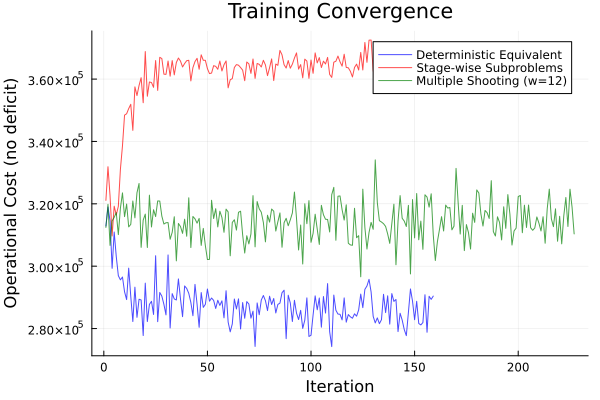
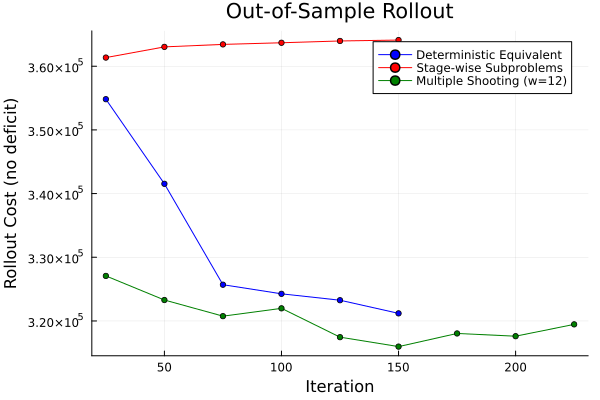
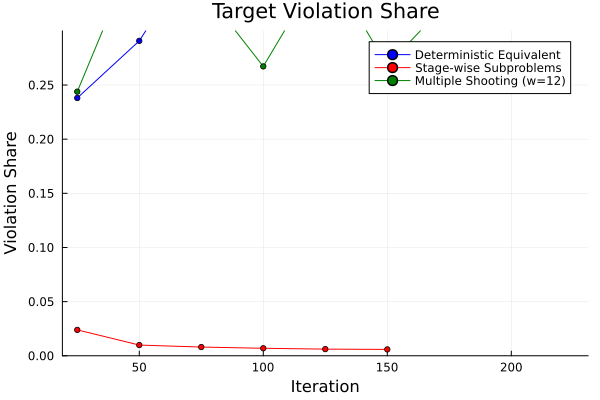
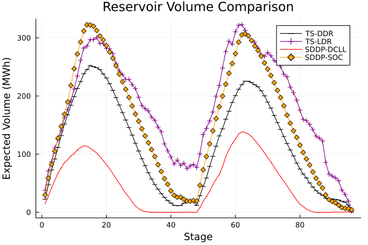
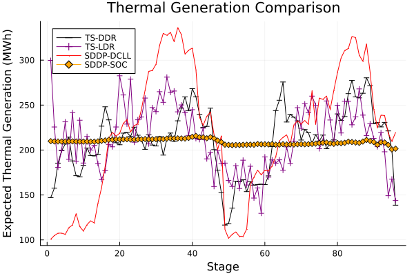

Hydropower Scheduling
This example trains target-setting decision rules for the Bolivia long-term hydrothermal dispatch (LTHD) problem — both TS-DDR (deep, LSTM-based) and TS-LDR (linear) — and compares them against an SDDP baseline with inconsistent formulations.
The Bolivia system has 10 hydro plants, 96 monthly stages, and AC power flow constraints. Inflow uncertainty is sampled from 47 historical scenarios.
Overview of the TS-DDR approach
Classical stochastic programming (e.g., SDDP) constructs piecewise-linear value-function approximations. TS-DDR takes a different route: a neural network policy $\pi_\theta$ maps observations to target states, and a projection subproblem at each stage enforces physical feasibility while tracking those targets as closely as possible.
The key insight is that the gradient of the projection subproblem with respect to the target parameters is available through Lagrange duality (or equivalently, implicit differentiation of the KKT conditions). This avoids differentiating through the full optimization solver.
Problem formulation
At each stage $t$, the operator observes inflows $w_t$ and the current reservoir state $x_{t-1}$. The policy predicts target volumes:
\[\hat{x}_t = \pi_\theta(w_{1:t},\, x_{t-1}).\]
A stage subproblem projects onto the feasible set:
\[\begin{aligned} q_t(x_{t-1},\, w_t;\; \hat{x}_t) \;=\; \min_{x_t, u_t, \delta_t} \quad & c_t(x_t, u_t) + C_\delta\, \|\delta_t\| \\ \text{s.t.}\quad & x_t = x_{t-1} + w_t - \text{turbined}_t - \text{spilled}_t, && \text{(reservoir balance)} \\ & x_t + \delta_t = \hat{x}_t, && : \lambda_t \quad \text{(target constraint)} \\ & \text{AC-OPF}(u_t), && \text{(power flow)} \\ & x_t \in [0, \bar{x}],\; u_t \ge 0. \end{aligned}\]
The slack variable $\delta_t$ absorbs infeasible targets; $\lambda_t$ is the dual multiplier that provides the gradient signal.
Gradient computation: the envelope theorem
By the envelope theorem, the sensitivity of the optimal value with respect to the target parameter is simply the dual:
\[\frac{\partial q_t}{\partial \hat{x}_t} \;=\; -\lambda_t.\]
Combined with backpropagation through the policy network, the full gradient of the expected cost is:
\[\nabla_\theta \mathbb{E}[Q] \;\approx\; \frac{1}{S} \sum_{s=1}^{S} \sum_{t=1}^{T} \lambda_t^s \odot \nabla_\theta \hat{x}_t^s(\theta),\]
where $S$ is the number of sampled trajectories per batch and $\odot$ denotes elementwise multiplication.
Problem setup
The JuMP subproblems are built from a MOF file (exported from PowerModels.jl) plus hydro data (reservoir limits, inflow scenarios). Each subproblem contains:
- AC optimal power flow constraints
- Reservoir balance:
vol_out = vol_in + inflow - turbined - spilled - Target-slack deficit variables penalizing deviation from the policy's targets
The helper build_hydropowermodels reads the case data, creates one JuMP model per stage, and parameterizes the initial volumes and inflows so they can be set at each training sample.
using DecisionRules
using JuMP, DiffOpt, Ipopt
using Flux
using Statistics, RandomLoad the problem builder (reads MOF + hydro JSON + inflow CSV).
include("load_hydropowermodels.jl")Building the stage-wise subproblems
Each subproblem is wrapped with DiffOpt.diff_optimizer so that Lagrange duals and implicit sensitivities are available for training.
diff_optimizer = () -> DiffOpt.diff_optimizer(
optimizer_with_attributes(Ipopt.Optimizer, "print_level" => 0, "linear_solver" => "mumps")
)
subproblems, state_params_in, state_params_out, uncertainty_samples, initial_state, max_volume =
build_hydropowermodels(
"bolivia", "ACPPowerModel.mof.json";
num_stages=96,
optimizer=diff_optimizer,
penalty_l1=:auto, penalty_l2=:auto,
)Policy architecture
The policy is a StateConditionedPolicy with two components:
- Encoder — a stack of LSTM cells that processes only the uncertainty (inflow) sequence, capturing temporal dependencies across stages.
- Combiner — a Dense layer that merges the encoded uncertainty with the previous state to produce the next target.
At each stage the policy receives $[w_t;\; x_{t-1}]$ and outputs target reservoir volumes $\hat{x}_t$:
┌─────────┐ ┌────────────────┐ ┌──────────────┐
│ w_t │─────▶│ LSTM encoder │─────▶│ │
└─────────┘ └────────────────┘ │ Dense │──▶ x̂_t
┌─────────┐ │ combiner │
│ x_{t-1} │─────────────────────────────▶│ │
└─────────┘ └──────────────┘The LSTM carries hidden state across stages, giving the policy memory of past inflows. The activation is sigmoid (bounding outputs to $[0,1]$, which is then scaled by the feasibility mapping).
models = state_conditioned_policy(
num_uncertainties, num_hydro, num_hydro, [128, 128];
activation=sigmoid, encoder_type=Flux.LSTM,
)TS-LDR: Linear Decision Rules
As a baseline, we also train a linear policy (TS-LDR). This uses dense_multilayer_nn with identity activation — a composition of linear layers equivalent to a single affine map:
\[\hat{x}_t = W [w_{1:t};\; x_{t-1}] + b.\]
TS-LDR uses the same target-setting framework and training pipeline as TS-DDR. The only difference is the policy class: linear maps have fewer parameters and cannot capture nonlinear inflow patterns, but they are a natural baseline from the classical LDR literature.
num_inputs = DecisionRules.policy_input_dim(num_uncertainties, num_hydro)
models = dense_multilayer_nn(num_inputs, num_hydro, [64, 64]; activation=identity)Training pipeline 1: Deterministic Equivalent
The deterministic equivalent (DE) couples all 96 stages into a single NLP for each sampled trajectory. This is the most direct formulation: the policy generates the full target trajectory $\hat{x}_{1:T}$ in one forward pass, and a single coupled solve determines all realized states simultaneously.
How it works
┌──────────────────────────────────────────────────────────┐
│ For each sampled trajectory w_{1:T}: │
│ │
│ 1. Forward pass: x̂_{1:T} = π_θ(w_{1:T}, x_0) │
│ │
│ 2. Solve coupled NLP: │
│ min Σ_t c_t(x_t, u_t) + C_δ Σ_t ‖δ_t‖ │
│ s.t. dynamics + AC-OPF for ALL stages simultaneously │
│ x_t + δ_t = x̂_t(θ) ∀t (target constraint) │
│ │
│ 3. Read duals λ_t of target constraints │
│ Gradient: Σ_t λ_t ⊙ ∇_θ x̂_t(θ) │
└──────────────────────────────────────────────────────────┘Mathematical formulation
\[\begin{aligned} Q(w;\, \theta) \;=\; \min_{\{x_t, u_t, \delta_t\}_{t=1}^{T}} \quad & \sum_{t=1}^{T} c_t(x_t, u_t) + C_\delta \sum_{t=1}^{T} \|\delta_t\| \\ \text{s.t.}\quad & x_t = T_t(w_t,\, u_t,\, x_{t-1}), && t=1,\ldots,T \\ & x_t + \delta_t = \hat{x}_t(\theta), && : \lambda_t,\quad t=1,\ldots,T \\ & h_t(x_t, u_t) \ge 0, && t=1,\ldots,T \end{aligned}\]
The gradient is exact by the envelope theorem:
\[\nabla_\theta Q \;=\; \sum_{t=1}^{T} \lambda_t \odot \nabla_\theta \hat{x}_t(\theta).\]
Advantages: strongest gradient signal — full cross-stage coupling captures how a target at stage 3 affects costs at stage 50.
Disadvantage: the NLP has $96 \times (\text{AC-OPF variables})$ decision variables; the policy generates targets without seeing realized states (open-loop target generation).
det_equivalent, uncertainty_samples_det = DecisionRules.deterministic_equivalent!(
det_model, subproblems_de, state_params_in, state_params_out,
Float64.(initial_state), uncertainty_samples,
)
train_multistage(
models, initial_state, det_equivalent,
state_params_in, state_params_out, uncertainty_samples;
num_batches=4000, optimizer=Flux.Adam(),
penalty_schedule=[(1,100,0.1), (101,210,1.0), (211,300,10.0), (301,4000,30.0)],
)Training pipeline 2: Stage-wise Decomposition (Single Shooting)
Stage-wise decomposition solves one subproblem per stage sequentially. Unlike the DE, the policy operates in closed loop: after each stage solve, the realized state $x_t$ (not the predicted target) is fed back as input to the next stage.
How it works
┌─────────────────────────────────────────────────────────────┐
│ For each sampled trajectory w_{1:T}: │
│ │
│ x_0 = initial state │
│ for t = 1, ..., T: │
│ x̂_t = π_θ(w_t, x_{t-1}) ← predict target │
│ solve stage-t subproblem ← project to feasible│
│ x_t = realized state from solver ← closed-loop │
│ accumulate c_t + C_δ ‖δ_t‖ │
│ │
│ Gradient: chain rule through all stage solves │
└─────────────────────────────────────────────────────────────┘Gradient chain
The gradient must account for how the realized state at stage $t$ depends on the targets at all earlier stages. By the chain rule:
\[\frac{\partial Q}{\partial \hat{x}_t} \;=\; \lambda_t + \sum_{k>t} \frac{\partial q_k}{\partial x_{k-1}} \cdot \prod_{j=t+1}^{k-1} \frac{\partial x_j}{\partial x_{j-1}} \cdot \frac{\partial x_t}{\partial \hat{x}_t}.\]
In practice, automatic differentiation (Zygote + ChainRules rrules defined on each stage solve) handles this chain automatically. The rrule for each stage solve reads the dual $\lambda_t$ for the target constraint and uses DiffOpt's implicit differentiation for the state-transition sensitivities.
Advantages: closed-loop — the policy sees realized states, matching deployment semantics. Each solve is small (single-stage AC-OPF).
Disadvantage: gradients weaken over long horizons because the chain rule multiplies many Jacobians; sequential solve prevents parallelism.
train_multistage(
models, initial_state, subproblems,
state_params_in, state_params_out, uncertainty_samples;
num_batches=3000, optimizer=Flux.Adam(),
penalty_schedule=:default_annealed,
)Training pipeline 3: Multiple Shooting
Multiple shooting partitions the $T$-stage horizon into $K$ windows of $W$ stages each. Within each window, a local deterministic equivalent couples the stages (strong gradient signal). Between windows, the realized end-state is passed to the next window (closed-loop continuity).
How it works
┌────────────────────────────────────────────────────────────────┐
│ Partition T=96 stages into K=⌈96/12⌉=8 windows of W=12 │
│ │
│ x_0 = initial state │
│ for k = 1, ..., K: │
│ stages = [(k-1)W+1, ..., kW] │
│ x̂_{stages} = π_θ(w_{stages}, x_{start_k}) │
│ solve window-k DE (12-stage coupled NLP) │
│ x_{end_k} = realized end-state from window solve │
│ x_{start_{k+1}} = x_{end_k} │
│ │
│ Gradient: │
│ Within window: duals from the coupled solve (like full DE) │
│ Across windows: DiffOpt chain rule through end-states │
└────────────────────────────────────────────────────────────────┘Gradient structure
Let $Q_k$ be the cost of window $k$. The total cost is $Q = \sum_k Q_k$. Within a window, the gradient is identical to the DE case (duals of the target constraints in the coupled model). Across windows, the chain rule threads through the realized end-state:
\[\frac{dQ}{d\theta} \;=\; \sum_{k=1}^{K} \left( \frac{\partial Q_k}{\partial \hat{x}_k} \cdot \frac{\partial \hat{x}_k}{\partial \theta} \;+\; \frac{\partial Q_k}{\partial x_{\text{start}_k}} \cdot \frac{d x_{\text{start}_k}}{d\theta} \right),\]
where $\frac{d x_{\text{start}_k}}{d\theta}$ involves the chain through all prior windows via $x_{\text{end}_{k-1}}$.
Advantages: balances gradient quality (12-stage coupling) with tractability (8 small DEs instead of one large one); inter-window chain provides some closed-loop signal.
Disadvantage: window boundaries introduce gradient discontinuities; the full-horizon coupling is weaker than the single DE.
windows = DecisionRules.setup_shooting_windows(
subproblems, state_params_in, state_params_out,
Float64.(initial_state), uncertainty_samples;
window_size=12,
model_factory=() -> DiffOpt.nonlinear_diff_model(ipopt_attrs),
)
train_multiple_shooting(
models, initial_state, windows, () -> uncertainty_samples;
num_batches=3000, optimizer=Flux.Adam(),
penalty_schedule=:default_annealed,
)Penalty annealing
The target penalty $C_\delta$ controls the trade-off between following the policy's targets and minimizing operational cost. DecisionRules supports a penalty annealing schedule that ramps the penalty multiplier during training:
| Phase | Multiplier | Purpose |
|---|---|---|
| Warmup | $0.1 \times C_\delta$ | Let the policy explore freely |
| Nominal | $1.0 \times C_\delta$ | Standard training |
| Tighten | $10.0 \times C_\delta$ | Sharpen target tracking |
| Lock | $30.0 \times C_\delta$ | Final precision |
This is activated with penalty_schedule=:default_annealed or by passing an explicit list of (start_iter, end_iter, multiplier) tuples.
Evaluation
After training, we evaluate the policy using stage-wise rollout on held-out scenarios. Two modes:
- Target feedback (
policy_state=:target): the policy receives its own predicted target as input, matching DE training semantics. - Realized feedback (
policy_state=:realized): the policy receives the realized state from the solver, matching deployment semantics.
The target-violation share measures how much cost comes from the slack penalty rather than actual operations — it should be small ($\le 5\%$) for a well-trained policy.
rollout_eval = RolloutEvaluation(
subproblems, state_params_in, state_params_out, initial_state, eval_scenarios;
stride=1, policy_state=:realized,
)
rollout_eval(1, models)
println("Operational cost: ", rollout_eval.last_objective_no_deficit)
println("Violation share: ", rollout_eval.last_violation_share)SDDP baseline
For comparison, we also train an SDDP policy using SDDP.jl with inconsistent formulations: a convex SOC-WR relaxation for the backward pass (cut generation) and the nonconvex ACP formulation for the forward pass (simulation). This is a pragmatic approach when the true problem (AC-OPF) is nonconvex — SDDP requires convexity for valid cuts, so a convex relaxation approximates the value function while the forward pass evaluates under the true physics.
The SDDP policy is trained for up to 2000 iterations and the learned cuts are saved to a JSON file, which can be loaded to simulate the policy under the ACP formulation.
Results
The plots below compare the TS-DDR and TS-LDR training formulations and the SDDP baseline on the Bolivia case. Training curves, out-of-sample cost distributions, reservoir volume trajectories, and thermal generation profiles are shown.
Training convergence (TS-DDR methods)

Out-of-sample cost (TS-DDR methods)

Target-violation share (TS-DDR methods)

Reservoir volume comparison (all methods)

Thermal generation comparison (all methods)

Summary
| Method | Policy | Mean Cost | Std | N |
|---|---|---|---|---|
| TS-DDR (DE) | LSTM | 325 540 | 6 266 | 100 |
| TS-DDR (DE, anneal) | LSTM | 324 445 | 6 134 | 100 |
| TS-DDR (shooting w=12) | LSTM | 323 289 | 5 593 | 100 |
| TS-DDR (shooting w=12, anneal) | LSTM | 322 812 | 6 081 | 100 |
| TS-DDR (stage-wise, anneal) | LSTM | 321 543 | 6 214 | 100 |
| SDDP (SOC-WR / ACP) | cuts | 303 684 | — | 100 |
All three TS-DDR methods with penalty annealing converge to similar costs (321K–325K). SDDP trains on 126 stages (96 + 30 margin).